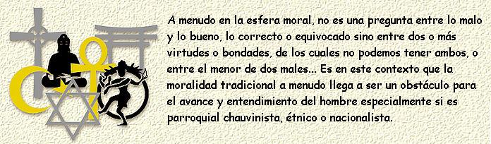

Este artículo apareció publicado por primera vez en la Revista Peruana de Filosofia Aplicada (RPFA).
Hay sin duda muchas razones para la persistencia de los sistemas de creencias religiosas. Seguramente de gran significancia es su función moral. Porque incluso aunque la adoración al Dios Padre o lo trascendental invisible no haya sido derrotada por la modernidad, las instituciones religiosas retienen otra función principal. Ellas suministran un sistema de reglas y normas de conducta. Es verdad que miles de sectas y cultos han sido practicados por una amplia variedad de grupos socioculturales en el pasado. Es también verdad acerca de las grandes religiones históricas, las cuales nos proveen con los Diez Mandamientos, el Sermón de la Montaña, las Virtudes del Corán, el Sendero Budista de la Rectitud. En un último análisis, ¿provee la religión de un fundamento necesario para la moralidad? ¿Las reglas morales juegan un importante rol biogenético en la lucha por la sobrevivencia?
Los sociobiólogos también han sugerido que si grupos sociales tienen que afrontar la adversidad, entonces ellos necesitan reglas internas para gobernar su comportamiento: sistemas morales, además tienen algunos valores adaptativos y aquellos enraizados en la religión ayudan a santificar su ambiente y aseguran un sentido de obligación y obediencia. Mas aún, sistemas sagrados de reglas morales ayudan a determinar quienes sobrevivirán y quienes se reproducirán.
Las religiones además no son un simple sistema de creencias, ellas definen un modo de vida. En ellas yacen normas de conducta que regulan varias formas de comportamiento. Ellas pueden gobernar la relación entre los sexos y determinar qué conducta sexual es virtuosa o pecaminosa. Esto también se aplica a la estructura de la familia, delineando el rol apropiado del padre, madre e hijos. De la misma manera, operan sobre otras instituciones sociales complejas, las cuales introducen tabúes y fobias. Algunas acciones son juzgadas ejemplo de virtud y nobleza, y son recompensadas tanto en esta vida como en la siguiente. Otras son consideradas malvadas e impermisibles, y quizás puedan ser castigadas con la muerte, excomunión, exilio, castigos físicos, prisión o desfavoreciéndolas. El significado original del término moral esta relacionado a lo mores, el cual se refiere a las tradiciones normativas y hábitos de personas que viven y trabajan juntas. Presumiblemente, aquellos grupos con un sistema bien regulado de conducta que pasan de generación en generación no tienen que ir inventado nuevas reglas a cada momento. Pueden instruir a sus hijos en la moral de los padres, y así asegurar alguna cohesión y proveer alguna unidad interna necesaria para la perpetuación del grupo. Aquellos individuos o grupos que no pudieron conformar el código no sobrevivirían, y de aquí que ellos no podrían trasmitir sus disposiciones genéticas a futuras generaciones.
La moralidad, en este sentido, es además un método de adaptación, y cuando esta unida a la religión adquiere sanción divina. Hay recompensas y retribuciones divinas, y el amor o temor a Dios provee los motivos para las obligaciones y deberes morales y obligaciones. La moral no es una simple confección del hombre, sino que es inspirada divinamente. Moisés trajo del Monte Sinaí los Mandamientos de Dios para los Hijos de Israel. Esto suministra una base sagrada para su sistema político patriarcal, y el divino derecho para gobernarse. Es la unión de la religión y la moralidad que refuerza el sistema moral, además la moralidad tiene una profunda función sociológica; provee de un marco de trabajo y el lazo de integración que capacita al grupo para preservarse así mismo y sus funciones. Como los seres humanos son animales sociales capaces de sobrevivir fuera de una comunidad, la moralidad tiene también una función biogenética.
Todo esto es esencial, si entendemos el rol histórico positivo que juega la religión. Incluso si un código de moral religioso es severo, siempre suministra algunas bases para la estabilidad y el orden, y esto previene una conducta anárquica. En obediencia a las normas tradicionales, alguna medida de la paz social es mantenida.
Estas son, sin embargo disfunciones que resultan de enlazar demasiado cerca la moralidad a la religión, como la historia del hombre lo demuestra. Primero donde hay un cambio social, un sistema fijo posiblemente encuentre dificultad de acomodarse. Puede ser intolerable intentar flexibilizar los mandamientos absolutos de la moralidad de la religión y aplicarlos a contextos únicos donde se requiera tomar decisiones. A menudo en la esfera moral, no es una pregunta entre lo malo y lo bueno, lo correcto o equivocado sino entre dos o más virtudes o bondades, de los cuales no podemos tener ambos, o entre el menor de dos males. Aunque un sistema cohesivo puede ayudar a definir derechos y responsabilidades, podría llegar a ser represivo sin permitir nuevas interpretaciones o modificaciones de la práctica que podrían ser necesarias, y así llegar a ser obstáculo de progreso. Esta falla es exacerbada cuando el sistema tradicional de moralidad encuentra alternativas morales nuevas (inevitable en la historia humana). El conflicto de competencia moral hace más difícil negociar los compromisos. Antiguamente los Griegos caracterizaban los valores morales de otras naciones como “bárbaras”, aunque incluso entre las ciudades-estado helénicas existieron una amplia variedad de costumbres, como se ve en la diferencia entre los códigos de moral de Esparta y Atenas. Las cruzadas cristianas chocaron con las ideas morales musulmanas. Marco Polo mas tarde dio a conocer a Europa las extrañas diferencias culturales de Genghis Khan y el imperio chino.
Es en este contexto que la moralidad tradicional a menudo llega a ser un obstáculo para el avance y entendimiento del hombre especialmente si es parroquial chauvinista, étnico o nacionalista. La espada llega a ser el juez de lo correcto o incorrecto. Las diferencias en la moralidad son resueltas por la guerra y conquista, cuando un grupo busca imponer su modo de vida sobre otro, tal como Alejandro el Grande intentó hacerlo cuando el conquisto Persia, solo para tener a sus sucesores subyugados por modos de vida persas.
Un sistema de leyes debe emerger finalmente para resolver disputas entre pueblos o definir ciertas formas de conducta como legalmente permisibles y otras como ilegales e impermisibles y reforzar el código de vida por el poder o el estado. Con el tiempo, las religiones tribales en sí mismas deben llegar a ser más universales, como cuando el cristianismo intentó transformar el judaísmo de una religión nacionalista a un mensaje universal para todos los seres humanos, y como el Islam tiempo después buscó imponer su moral y ley en un amplio territorio geográfico conquistado.
Regresando al tema biogenético en este contexto, podemos preguntar: ¿Las instituciones religiosas influyen en el curso de su evolución? La respuesta es afirmativa para la mayoría de las religiones, particularmente las históricas, determinando quién podría producir y por qué. Aunque esta reproducción de reglas es variada. Hay reglas que gobiernan el infanticidio y el aborto, así si los fetos defectos pueden sobrevivir depende de las reglas sociales. Antiguamente las sociedades griegas practicaban el infanticidio aunque los cristianos y musulmanes se oponían. Similarmente en las sociedades judías y musulmanas, en las cuales se practicaba la circuncisión, algunos infantes morían bajo el cuchillo mohoso del rabino o sacerdote. Algunas religiones practican ritos de iniciación o ceremonias de pubertad. Algunas enaltecen el celibato, la castidad y la virginidad, otras son más permisivas en permitir la libertad sexual. Las sociedades judías y cristianas llegaron a ser monógamas, los musulmanes han practicado la poligamia. Los sacerdotes católicos y budistas practicaban el celibato, pero los rabinos judíos, los mullah musulmanes y los teólogos protestantes se procreaban y multiplicaban sus hijos. Hay reglas que gobiernan el divorcio y el segundo matrimonio. Muchas prácticas fueron puramente fortuitas, por ejemplo Mahoma se vio envuelto en varias guerras donde muchos de sus soldados fueron muertos, de aquí se pensó que los más apropiado para un hombre era tomar más de una mujer. La necesidad del cuidado de viudas y huérfanos es referido constantemente en el Corán.
Todos estos mandamientos tenían una inevitable influencia causal sobre las estrategias reproductivas y los tipos de personas que podrían reproducirse, independientemente de la adaptación al ambiente. Similares influencias profundas sobre el comportamiento biológico se ejercen en otras maneras: Los hindúes lavaban a sus muertos en el Ganges y también depositaban los cuerpos allí, sin duda esto fue una causa de enfermedades infecciosas. Los peregrinos musulmanes camino a la Meca soportaban la dureza del viaje expuestos a enfermedades tales como el cólera. Los cristianos en la misa besaban el mismo crucifijo y bebían del mismo caliz del vino, así se trasmitían las enfermedades infecciosas. Algunas religiones habían adoptado un elemento fatalista hacia la enfermedad y el dolor, el cual tiende a impedir o debilitar los esfuerzos de la ciencia médica para el descubrimiento de curaciones. Por mucho tiempo, hubo religiones que prohibían las autopsias. Por eso hay fuerzas poderosas inconcientes e muy irracionales que interfieren con la selección natural.
Es difícil afirmar si esto tiende a desarrollar disposiciones genéticas debido a que ha habido un amplio rango de prácticas. Sin embargo, Ernest Van den Haag ha observado que podría haber tenido efectos contrarios en la endogamia, la población y las reservas genéticas: Los sacerdotes católicos, que llegaron a ser eruditos y estudiaron en monasterios, fueron célibes, de aquí que no pudieron heredar su talentos intelectuales (tanto como los tuvieron) a generaciones futuras. Mientras que los rabinos judíos y académicos talmúdicos en los shtetls de Polonia y Rusia tenían grandes familias. Similarmente, las prohibiciones religiosas judías contra el matrimonio fuera del grupo pueden haber tenido la tendencia a exacerbar algunas disposiciones genéticas negativas, tales como la alta incidencia de la enfermedad de Tay-Sachs.
Hay otro tema a ser discutido, es si los individuos pueden o no ser liberados de las estrictas reglas morales que gobiernan el grupo social. Es claro que otro desarrollo positivo ocurriría en la historia humana, éste fue el divorcio de la ética de la religión y las costumbres morales, así como también los esfuerzos independientes para establecer la ética como un campo autónomo de la investigación basada en la razón, enteramente libre de las sanciones religiosas.
Fueron los sofistas griegos quienes hicieron posible este desarrollo. En los viajes de ciudad-estado a ciudad-estado, ellos fueron impresionados por la relatividad de la conducta moral. Los hombres y mujeres adoraban diferentes ídolos y practicaban diferentes valores morales, y los maestros itinerantes se dieron cuenta de estas diversidades y las rechazaron a todas ellas. Trasímaco, Calicles, Gorgias, Protágoras y otros vieron que esos valores eran relativos a la sociedad en los cuales estaban y que ha menudo eran mantenidos por élites sociales para su propio interés. De aquí que los sofistas llegaron a ser escépticos y cínicos acerca de los absolutos. En cambio ellos practicaron el propio interés, el arte de la obtención del éxito e ir adelante (principalmente como hacer amigos o influenciar en la gente). Sócrates y Platón buscaron el establecimiento de un nuevo campo de la ética fuera de toda competencia, uno que no esté basado solamente en la convención sino que tenga algún fundamento en las leyes naturales. Ellos también buscaron desenmascarar los mitos homéricos -como lo hacen Sócrates y Adamanto en La República- como una base inadecuada e hipócrita para la conducta moral. ¿Estaban estas ideales morales -bondad, virtud, belleza, verdad, justicia- dentro de la naturaleza de las cosas, como Sócrates pensó? ¿y podrían servir como una guía para la conducta?
Aristóteles siguió a través de esta búsqueda en la Ética Nicomaquea planteando una búsqueda empírica, basada en la razón práctica. ¿Qué es lo bueno? se preguntaba, y ¿cómo podemos lograr una vida buena? Expuso un método racional para perfeccionar la naturaleza humana realizando nuestras potencialidades, logrando alguna medida la excelencia, la nobleza, la eudaemonia o la felicidad. Los filósofos han demostrado desde entonces que la ética puede estar basada en la razón. No necesita estar sujeta a la moralidad tradicional o la doctrina religiosa. Así si los códigos morales tenían en sus comienzos una función social, requerida por la naturaleza del ser humano, si él tiene que vivir en comunidad y sobrevivir, no necesita tener sanción divina para ser cumplido o hacer cumplir. Los hombres modernos han buscado desde entonces establecer las condiciones de la buena vida en fundamentos racionales y juzgar las conductas morales por sus consecuencias en el comportamiento para el bien o el mal. Una acción es considerada buena si maximiza la felicidad humana y minimiza el sufrimiento, y la mala si ocurre lo contrario. Además hay normas de justicia, las cuales pueden ser justificadas independientemente de cualquier fundamento teológico, como lo demostró Kant. La conciencia moral tiene sus propias fuentes: la empatía y el altruismo suministran motivos adicionales para el comportamiento moral. Aunque no hay duda que en caso de que sistemas de creencias religiosas puedan haber tenido una función moral y social y éstas a menudo lo hicieron bien, la humanidad ha sobrepasado esta necesidad. De un inicial facilitador de la conducta moral, la religión se ha convertido ahora en un obstáculo. Porque la moralidad basada en hábitos sociales atrincherados y autoridades religiosas pueden ser impedimento para el progreso humano, la necesaria reforma moral y la aplicación de la inteligencia crítica para la solución de problemas humanos.
Paul Kurtz es profesor emérito de filosofía de la Universidad Estatal de Nueva York en Buffalo; es el fundador del Concilio para el Humanismo secular y es editor en jefé de la revista escéptica Free Inquiry. Kurtz ha escrito varios libros, entre ellos “Defendiendo la Razón” Ensayos de humanismo secular y escepticismo, Living without religion - Eupraxophy, The new skepticism, Skeptical odysseys, El fruto phohibido - la ética del humanismo.
Volver a la sección Examinando las religiones
Comentarios
Comments powered by Disqus